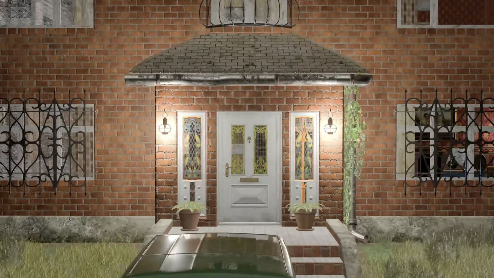
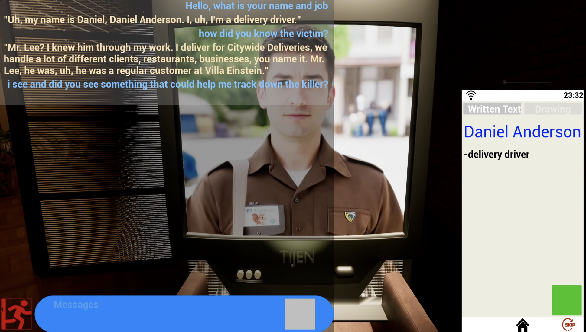

AI-generated mysteries
Gemini scripts suspects, motives, and timelines, blending player prompts with noir canon.
- Motives stay logical thanks to constraint-aware prompt slots.
- Truth tables keep red herrings believable yet solvable.
Gemini-powered murder mysteries where suspects, clues, and props regenerate every single playthrough.
Case telemetry
Average session from theme selection to verdict reveal.
Narrative artifacts generated per loop (suspects, props, dossiers).
Streaming response time for NPC repartee via Gemini.
Players nailing the culprit when evidence mode is set to default.
Systems
Gemini scripts suspects, motives, and timelines, blending player prompts with noir canon.
Props, rooms, and lighting adapt to each case so evidence feels grounded in the environment.
NPCs maintain memory stacks of interrogations, adjusting tone and alibis based on your tactics.
Auto-written dossiers cross-link wounds, timelines, and weapon lore to validate your accusations.
The verdict scene remixes your clues, quotes suspects, and highlights contradictions—so even failure becomes memorable noir narration.
Flow
Players choose a genre and tone; Gemini seeds the canonical truth.
Characters, props, and clues spawn across the villa with stories that reference the requested tone.
Interview suspects, photograph evidence, and cross-check medical notes to expose contradictions.
Submit your accusation and receive a Gemini-written verdict that grades logic, accuracy, and evidence quality.
Gallery

